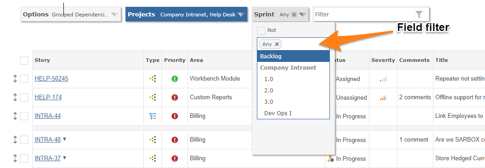
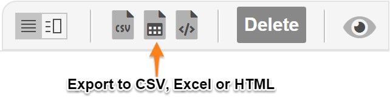

Using Reports
Reporting is located at the top of the grid for ad hoc exports and in the menu for canned reports.
Reports are delivered in Microsoft Excel format and users can quickly create their own reports.
Report Filter
Whatever criteria is selected by the filter is used by the reports, regardless of the number of items on a page.

Data Export
You can export filtered data straight to Excel, HTML and CSV format, or run a report from the menu, which will also use the Workspace filter for its data selection.

Canned Reports
A sample of pre-defined Excel reports are provided that contain data pivots and charts.
- Age Analysis: age of open/closed items, breakdown by resource and status
- Component Breakdown: occurence breakdown with pivot table and charts
- Priority Breakdown: occurence breakdown with pivot table and charts
- Project Estimates Vs Actuals: time estimates vs. time logged with variance
- Resolution Breakdown: occurence breakdown with pivot table and charts
- Resource Forecast Accuracy: time estimates vs. time logged, by month
- Severity Breakdown: occurence breakdown with pivot table and charts
- Status Breakdown: occurence breakdown with pivot table and charts
- Summary: breakdown by various data attributes with pivot table and chart
- Timesheet: provides a time report for projects so that you can analyze who spent what time on the project and when
- Type Breakdown: occurence breakdown with pivot table and charts
- Version Breakdown: breakdown by various data attributes with pivot table and chart